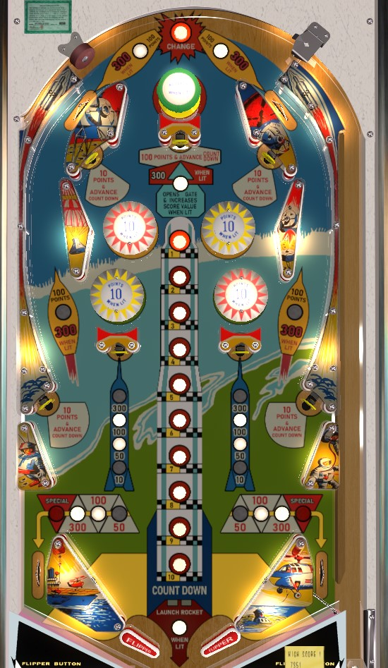

Not to be confused with Apollo 13 (Sega, 1995).
Apollo is the replay version, and Blast Off and Lunar Shot are the add-a-ball versions. I believe the only difference between versions is whether specials award extra balls or free games.
Fittingly for a game called Apollo, the orbit shots are the main attraction, worth 100 or 300 points and getting the ball back to the top of the table. Advancing the rocket through standup targets labelled "Advance" is more consistent and frequently easier than aiming for lit rollover buttons. Advancing the rocket countdown to 1 lights the top center standup target for big points and increases the value of the out lanes and lower center targets- absolutely go for this when lit. Advancing the rocket countdown past 1 will cause the backbox bagatelle game to play itself after the ball drains.
The below picture of Apollo's playfield was taken from the VPX recreation by JPSalas.
The main feature of Apollo is the rocket countdown. There is a column of 10 rollover buttons in the center of the playfield. At the start of the game, the button labelled 5 is lit. Rolling over a lit button scores 10 points, unlights that button, and lights the button above it with the next lower number. The upper left, upper right, lower left, and lower right standup targets score 10 points and advance the rocket countdown by one button as well. The top center standup target scores 100 points and a countdown advance.
Advancing the countdown past the 1 on the rocket will launch the rocket when the current ball drains; this consists of firing a ball into the bagatelle structure on the backbox of the game, where the ball can randomly score 50 points, 300 points, or a Special based on which slot it ends up in.
When the rocket countdown is advanced to the number 1, the top center standup target will light. Hitting this target when lit scores 300 points, unlights the target, opens the right out lane gate, and advances the value of the two lower center standup targets and the out lanes. At the start of the game, the lower center standup targets score 10 points, which can be advanced to 50, then 100, then 300; the out lanes start at 50 points, which can be advanced to 100, then 300, then Special. Increased values on all of these scoring features persist from ball to ball, so it's important to work through the countdown sequence and get boost the scoring of these targets and out lanes a couple times so that they are at high value for more time in the late game.
Several things in the game are lit alternately based on 1 point switch hits.
Red and yellow bumpers score 1 point, or 10 points when lit. Only one colour bumper can ever be lit at a time. When the red bumpers are lit, the passive bumper at the top of the table will be lit as well. The passive bumper always scores 10 points when hit, but if it is lit, it will also advance the rocket countdown one step with each hit.
Also, the orbits are worth 100 points or 300 when lit, alternating with 1-point switch hits. There is no one-way gate at the top of the orbit lanes, so the ball can fall back down them from the top of the table.
There are no in lanes. The flippers back up directly to the slingshots, which score 1 points. Out lanes score 50, 100, or 300 points, or Special, depending on whether the lit center target has been made 0, 1, 2, or 3+ times. There is a gate in the right out lane located below the rollover switch that redirects the ball back to the shooter lane. This gate is opened by hitting the top center standup target when lit and closes once used or at the start of a new game; however, it stays open between balls of the same game if it has not been used.
There is no end of ball bonus, except for the rocket launch on the backbox that can be triggered by advancing the rocket countdown past 1. Tilt penalty is just the ball in play, not the whole game. I am not aware of the ability to set specials to have a point value for competition/novelty play.
On Apollo, all Specials always give free games, and there is no way to earn an extra ball. On Blast Off and Lunar Shot, all Specials always give 1 extra ball.